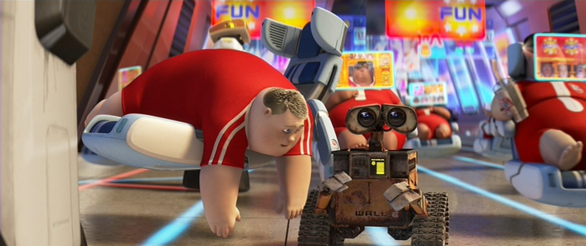

ACADEMY AWARDS
WINNER FOR ANIMATED FEATURE FILM
ANDREW STANTON
WINNER FOR ANIMATED FEATURE FILM
ANDREW STANTON

NOMINATED FOR MUSIC (ORIGINAL SCORE)
THOMAS NEWMAN
THOMAS NEWMAN

NOMINATED FOR MUSIC (ORIGINAL SONG)
"DOWN TO EARTH" - MUSIC BY PETER GABRIEL
AND THOMAS NEWMAN; LYRICS BY PETER GABRIEL
"DOWN TO EARTH" - MUSIC BY PETER GABRIEL
AND THOMAS NEWMAN; LYRICS BY PETER GABRIEL
NOMINATED FOR SOUND MIXING
TOM MYERS, MICHAEL SEMANICK AND BEN BURTT
TOM MYERS, MICHAEL SEMANICK AND BEN BURTT
NOMINATED FOR WRITING (ORIGINAL SCREENPLAY)
ANDREW STANTON,
JIM REARDON
ORIGINAL STORY BY
ANDREW STANTON,PETE DOCTER
ANDREW STANTON,
JIM REARDON
ORIGINAL STORY BY
ANDREW STANTON,PETE DOCTER